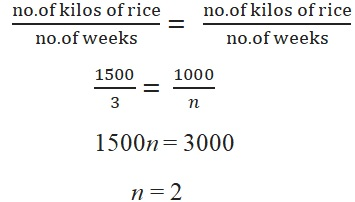

ENGAGE
In the relief operations for typhoon victims, 120 families in the evacuation center had consumed 1500 kilos of NFA rice for 3 weeks. If there were only 1000 kilos of NFA rice, how long will the families consume this volume of rice?
EXPLORE
This problem clearly shows the relationship among the number of families, the number of kilos of rice and the number of days to consume the rice. From the given situation above, we can see that the more the kilos of rice there is, the longer it will last for 120 families. This situation is an example of a direct proportion. Thus, we have
Therefore, 1000kilos of NFA rice will be consumed in 2 weeks.
EXPLAIN
In a direct proportion, as one quantity increases, the other quantity increases at the same rate and vice versa.
Can you cite an example of real-life situation that involves direct proportion?
In an inverse proportion, one quantity increases as the other quantity decreases at the same rate, and vice versa.
Speed varies inversely with time of travel because the faster we go, the shorter the time travel.
Example 1
It takes Kevin 20 minutes to ride his bicycle at 20kph from home to the grocery store. To shorten his travel time to 16 minutes for the same distance, how fast should he cycle?
Solution:
Let the desired speed be x kph. Then we have the following table.
| Speed (kph) | 20 | x |
| Time (in minutes) | 20 | 16 |
The faster the bicycle is drive, the less time is required to reach the destination.So, this is an inverse proportion.
Hence
16 . x = 20 . 20 Get the cross products
16x/16 = 400/16 Divide both sides by 16
Answer: Kevin should cycle at 25kph
Application and Problem Solving
A glass of jar has 64 chocolates. Mark, Dave, and Ralph will share the chocolates in the ratio 1:1:2. How many chocolates will each on of then get?